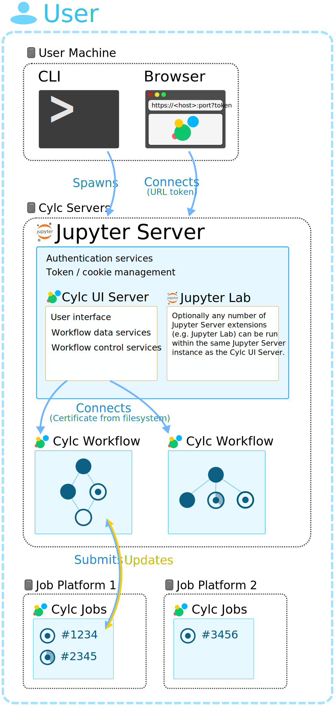

Cylc UI Server
- Cylc Flow
Provides a command line utility for monitoring and controlling Cylc workflows called
cylc tui.- Cylc UI Server
Provides a graphical utility for use in a web browser.
The Cylc UI Server connects to running workflows to provide “live” data and accesses workflow databases and the filesystem to provide “offline” data.
Jupyter Server
The Cylc UI Server is a Jupyter Server extension like Jupyter Lab.
Jupyter Server provides the web server infrastructure which is shared by its extensions which can used to run multiple extensions simultaneously.
If desired other extensions (e.g. Jupyter Lab) can be installed and configured to run in the same server as the Cylc UI Server.
See Managing multiple extensions for details on managing which extensions are run by Jupyter Server.
Jupyter Server can be run in two ways, single-user (token authenticated) and multi-user (hub authenticated).
Single-User Mode
In single-user mode users must start their own UI Servers from the command line.
Jupyter Server will provide them with a URL to access their server including a secure token which provides authentication.
Authentication Overview
Users can only monitor and control their own workflows.
{kind=link}
Jupyter Hub
Jupyter Hub is a multi-user server which spawns and manages a configured service for authenticated users.
The “Cylc Hub” is a Jupyter Hub instance which is pre-configured to spawn
Cylc UI Servers, launched by the cylc hub command.
It is also possible to configure Jupyter Hub yourself, see the Cylc Hub
configuration file for more information.
Jupyter Hub supports a variety of different implementations and plugin interfaces for:
Multi-User Mode
Multi-user mode requires Jupyter Hub to be installed.
An administrator must start Jupyter Hub under a user account with the required privileges to spawn UI Servers on behalf of the user.
Users then visit Jupyter Hub where they authenticate. Jupyter Hub spawns UI Servers on behalf of users and provides each with a fixed URL (derived from the user name) using the configured proxy (usually Configurable HTTP Proxy).
Users can access each other’s UI Servers providing they have been granted permission.
Authentication is provided by either Jupyter Server or Jupyter Hub.
Authorization in the Cylc UI Server is provided by Cylc. In multi-user mode this allows users to connect to each other’s UI Servers for monitoring or control purposes.
For more information on security and configuration see Authorizing Others to Access Your Workflows.
For information on the architecture of Jupyter Hub and the Configurable HTTP Proxy see the Jupyter Hub technical overview.
Authentication Overview
{kind=link}